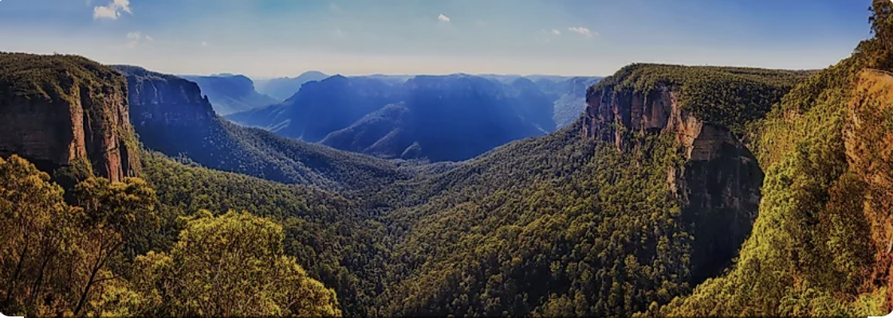
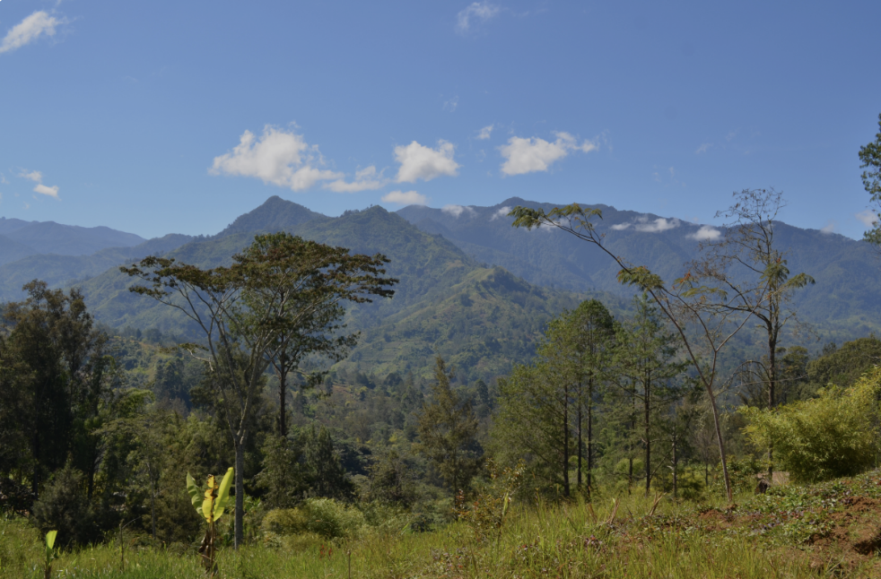
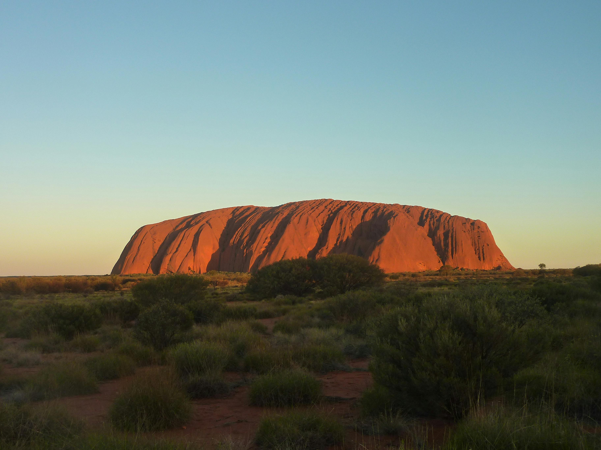
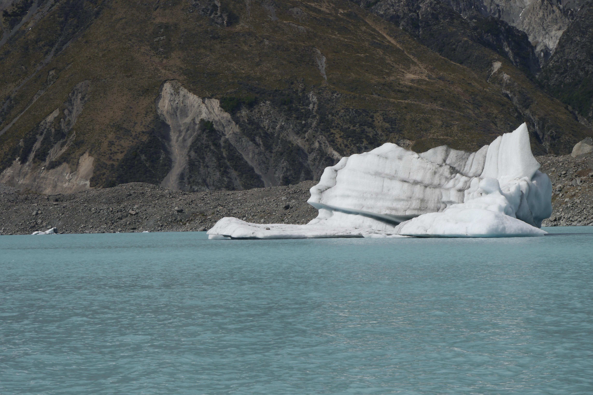
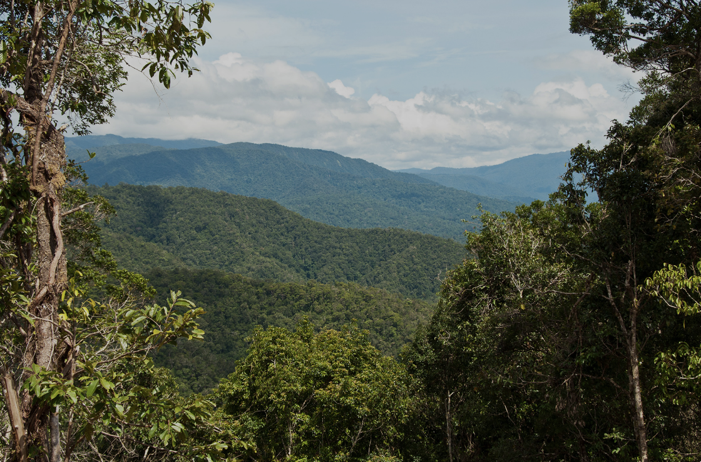

Oceania
Geography
Oceania, a region of thousands of islands in the Central and South Pacific, is dominated by Australia, Zealandia (New Zealand), and Papua New Guinea. It also includes three island groups: Melanesia, Micronesia, and Polynesia. Oceania’s islands are grouped into three types—continental islands, high islands, and low islands—each with unique geography and formation.
Continental Islands (Australia, Zealandia, & Papa New Guinea)
Continental islands like Australia, Zealandia, and Papua New Guinea were once part of larger continents. These regions share features like mountain ranges: the Great Dividing Range (Australia)
Southern Alps (New Zealand)

and New Guinea Highlands
Each has unique landscapes shaped by environmental processes: Australia’s deserts (Outback)
New Zealand’s glaciers
and Papua New Guinea’s rainforests
Melanesia (High Islands)
Melanesia’s high islands, such as Fiji, Papua New Guinea, and Vanuatu, are volcanic in origin. Located along the Pacific Ring of Fire, they feature volcanic peaks like Mount Yasur and Mount Lamington.

Fertile soils from volcanic activity support rich ecosystems, while ridges and valleys characterize the physical geography.

Micronesia & Polynesia (Low Islands)
Micronesia and Polynesia are dominated by low islands, often coral atolls formed around eroded volcanic islands. These islands, such as Kwajalein Atoll and Kiribati, have shallow lagoons surrounded by coral reefs. The unique environment fosters biodiversity, with species adapted to life on small, isolated islands.

Biodiversity
Australia is a land of extraordinary biodiversity, home to species and ecosystems found nowhere else on Earth. Its wildlife includes iconic marsupials like kangaroos, koalas, and wombats, each adapted to thrive in the continent's unique environments. The flora is equally distinct, with eucalyptus trees dominating much of the landscape and spinifex grasses defining arid regions. Australia's marine life is just as remarkable, with coral reefs such as the Great Barrier Reef hosting a dazzling array of fish, mollusks, and other marine organisms.
Ecosystems
The continent's major ecosystems are as diverse as its wildlife. The vast Outback, with its arid deserts and rugged terrain, supports hardy species like emus, dingoes, and desert-adapted plants. In the tropical rainforests of Queensland, lush vegetation provides habitats for species like the cassowary and tree kangaroo. Australia's marine ecosystems, particularly around the Great Barrier Reef, are vital to global biodiversity, supporting over 1,500 species of fish and thousands of coral species.
Click the image below to reveal a fun fact:
Conservation
Conservation in Australia faces significant challenges, particularly with the introduction of invasive species like rabbits and foxes, which disrupt native ecosystems. Coral bleaching, a result of rising sea temperatures, poses a major threat to the Great Barrier Reef, one of the most important marine habitats on the planet.
Conservation efforts include wildlife management programs, invasive species control, and initiatives to address climate change impacts, ensuring that Australia's unique ecological treasures are preserved for future generations.